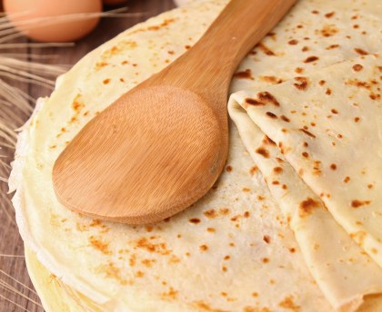

Pâte à crêpes simple
Selon nos informations, cette recette est compatible avec le régime suivant : végétarien
TEMPS TOTAL : 17 MIN



Ingrédients
- 5 oeufs
- 500g de farine
- 1l de lait demi écrémé
- 3 cuillère à soupe d'huile
- 1/2 verre de bière